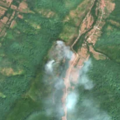
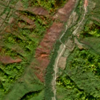

22,1 ha de pădure schimbată lângă Măru
Între 8 august 2026 și 12 august 2026, pe aproximativ 22,1 ha de pădure din comuna Zăvoi, lângă Măru, județul Caraș-Severin, imaginile Sentinel-2 arată că vegetația a dispărut sau s-a schimbat puternic. Nu pare o tăiere de lemn.
Autorizația de tăiere
nu e tăiere de pădure
Schimbarea nu pare tăiere de lemn, așa că autorizațiile de tăiere nu se aplică. Analistul AI vede urme de foc, nu de tăiere.
Ce se vede în poze: În imaginea «înainte» din august se văd fum sau nori albi chiar deasupra zonei marcate, iar în «după» zona are o dungă roșiatică-arsă, cu margini neregulate, care nu seamănă cu un parchet de tăiere. Poza detaliată arată că terenul era un amestec de pajiști și păduri, deci cel mai probabil este vorba de un incendiu.


Înainte și după: Copernicus Sentinel-2, 10 m pe pixel, conturul zonei cu portocaliu. Poza detaliată (Esri World Imagery) e de acum 1–4 ani: arată ce era acolo înainte, nu tăierea.
Pe scurt
- Identificator
- 20260812_45462_22443
- Locul
- Măru, comuna Zăvoi, județul Caraș-Severin (SIRUTA 54617)
- Coordonate (centru)
- 45.46189, 22.44294 · Google Maps · OpenStreetMap
- Suprafața
- 22,1 ha (din pixeli de 10 m; ± câțiva pixeli pe margine)
- Ultima imagine cu pădurea întreagă
- 8 august 2026
- Prima imagine cu schimbarea
- 12 august 2026
- Imagini în care se vede schimbarea
- 22
- Cât de sigur e semnalul din satelit
- ridicată
- Terenul
- pădure privată, după amenajamentul silvic publicat
- Arie protejată
- Munții Țarcu
- Pădure pierdută în jur, alți ani
- 2007 (Hansen)
- Garda Forestieră
- Timișoara
Dacă vrei să verifici sau să sesizezi
- Pădurile din județul Caraș-Severin sunt în grija Gărzii Forestiere Timișoara, care controlează tăierile și dă amenzile.
- Formularul Gărzii Forestiere Naționale primește sesizări și fără nume. Trimite linkul acestei pagini, coordonatele și pozele. Dacă tăierea e în desfășurare, sună la 112.
- Autorizațiile și transporturile de lemn se pot căuta în Inspectorul Pădurii.
Pagina arată ce se vede din satelit și ce scrie în registrul public; nu e o dovadă în sine.
Cum citezi zona
Linkul acestei pagini nu se schimbă. Dacă zona iese vreodată de pe hartă, pagina rămâne, cu data și cu ce știam despre ea.
Pădurea RO, zona 20260812_45462_22443: 22,1 ha, Măru, comuna Zăvoi, județul Caraș-Severin; schimbare văzută din satelit între 8 august 2026 și 12 august 2026. https://iliemihai.github.io/padurea-ro/zona/20260812_45462_22443/ (consultat la [data]). Date: CC BY 4.0.
Datele zonei: GeoJSON · toate zonele: date deschise · licența CC BY 4.0.
Istoricul zonei pe hartă
Starea se poate schimba când registrul publică o autorizație sau când analistul vede poze mai bune. O ținem aici, ca un link citat să arate și ce spuneam atunci.
Pe hartă cel târziu din 5 noiembrie 2026.
- 5 noiembrie 2026 – azi · nu e tăiere de pădure
Detalii tehnice, pentru verificare
De ce acest nivel de încredere:
- văzută schimbată în 22 imagini diferite
- peste 3 ha
- AI-ul vede pădure dispărută
- în poze, zona se schimbă vizibil față de pădurea din jur
Ce a văzut analistul cu context: Pe 2026-08-08 apar panașe albe (probabil fum) peste fâșia din outline, iar pe 2026-10-24 fâșia este brun-roșiatică, alungită pe linia pantei (39°), cu margini neregulate și continuată în afara conturului spre nord. În vederea largă mai există câteva pete brune similare pe versantul stâng, ceea ce susține ipoteza arderii și contrazice o tăiere rasă izolată. Canopia din 2000 de 45% și poza detaliată (pajiști între pâlcuri de arbori) arată că nu era pădure închisă peste tot; nu există autorizație de exploatare în 5 km. Culoarea este mai roșiatică decât neagră, iar drumul terțiar adiacent lasă posibilă și o lucrare, de aceea încrederea este moderată.
- Placa Sentinel-2
- 34TFR
- NDVI de referință
- 0.85
- NBR de referință
- 0.55
- Scăderea în pădurea din jur
- 0.09
- Persistență
- 0.93
- NDVI / NBR după
- 0.376 / -0.015
- Analistul de zi (model)
- taiere · 0.9 · claude-haiku-5-5
- Analistul cu context (model)
- foc · 0.5
Cum se calculează fiecare: metodologia.
Pune harta zonei într-un articol
Copiază codul în articol (merge în majoritatea site-urilor de știri). Sau pune doar linkul: WhatsApp, Facebook și X arată singure poza zonei.